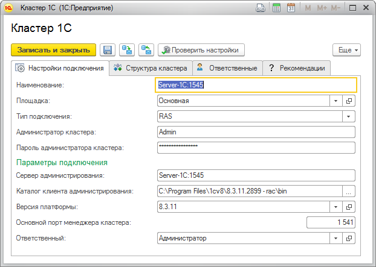

Данная форма позволит вам заполнить настройки кластера серверов 1С.

Поле "Наименование" обязательно для заполнения.
В поле "Тип подключения" небходимо указать вариант административного подключения к кластеру 1С. Рекомендуется использовать RAS.
Мониторинг кластера 1С с помощью RAS осуществляется по следущей схеме:
В поле "Сервер администрирования" нужно указать сетевое имя сервера RAS в локальной сети, если подключение к кластеру будет организовано через RAS. Для подключения к кластеру необходимо работающее приложение RAS.
Пример запуска RAS в консоли для ОС Windows:
"C:\Program Files\1cv8\8.3.11.2899\bin\ras.exe" cluster --port=1545 localhost:1540
Пример создания службы RAS для ОС Windows:
sc create "1C:Enterprise 8.3.11.2899 RAS (x86-64)_1545" binPath= "\"C:\Program Files\1cv8\8.3.11.2899\bin\ras.exe\" cluster --service --port 1545 localhost:1540" DisplayName= "1C:Enterprise 8.3.11.2899 RAS (x86-64)_1545" type= own start= demand
После создания службы необходимо открыть ее в оснастке "Службы" и установить необходимые настройки.
Для проверки корректности запуска RAS можно выполнить в консоли следующую команду на компьютере, где запущен RAS:
"C:\Program Files\1cv8\8.3.11.2899\bin\rac.exe" localhost:1545 cluster list
Пример результата выполнения команды:
cluster : c4aff0df-4547-42e1-a419-8220791af07a
host : localhost
port : 1541
name : "Локальный кластер"
expiration-timeout : 5
lifetime-limit : 0
max-memory-size : 4097152
max-memory-time-limit : 60
security-level : 0
session-fault-tolerance-level : 0
load-balancing-mode : performance
errors-count-threshold : 0
kill-problem-processes : 0
В поле "Каталог клиента администрирования" необходимо указать каталог расположения консольной утилиты rac.
В полях "Администратор кластера" и "Пароль администратора кластера" нужно указать имя администратора кластера и его пароль. Если администратор кластера не создан, то поля следует оставить пустыми.
После сохранения нового кластера ЦКК автоматически добавит контрольную процедуру "Контроль потребления памяти", которую необходимо настроить.
После заполнения настроек подключения рекомендуем проверить их корректность, выполнив команду "Проверить настройки".
При записи нового объекта "Кластер 1С" вам будет предложено заполнить структуру кластера. Если в данный момент заполнение структуры кластера не нужно, всегда можно данное действие выполнить интерактивно, перейтя на закладку "Структура кластера". Данный функционал позволяет получить структуру кластера и сохранить в информационной базе ЦКК необходимые элементы.